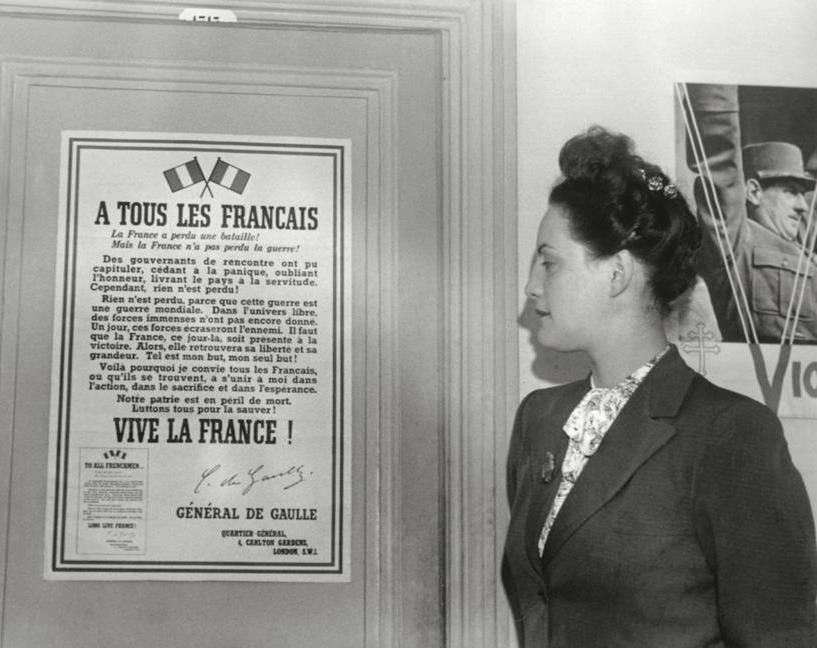

Le premier résistant était une femme
Série · 6 × 56′ · Siècle Productions
Marie Godart & Yohann Ghellis · Créée par Yohann Ghellis et Marie Godart · Dépôt 000543765
Pitch
Juin 1939 : Élisabeth de Miribel aide le général de Gaulle à finaliser l’appel du 18 juin, le point de départ d’un engagement dans la Résistance qui la mènera à travers l’Europe et le monde pour rallier les Alliés, tout en nourrissant une correspondance intime avec un ami autrichien où elle dépose ses doutes et ses espoirs.
La Résistance française, ce n’est pas seulement De Gaulle, c’est Élisabeth, et les autres. Nous suivons une perspective historique et diplomatique à travers ses yeux : déterminée à sauver la France, elle vit un périple des coulisses du pouvoir aux lignes de front, à travers l’Europe, le Canada, les États-Unis et l’Afrique du nord.
Ses exploits sont aussi racontés de manière intime via ses lettres à son ami (amant ?) autrichien, le seul à qui elle confie ses espoirs et ses peurs. Cette dimension sentimentale relie l’Histoire à son histoire et nous lie à elle à travers les décennies. Née en 1920, figure de la Résistance, elle a notamment contribué à transcrire l’appel du 18 juin 1940, seule, au sein d’une famille marquée par le maréchal Mac Mahon et les compromissions avec Vichy, elle a forgé des ponts entre la France libre et les démocraties alliées, portée par une correspondance qui fut son unique soutien moral.